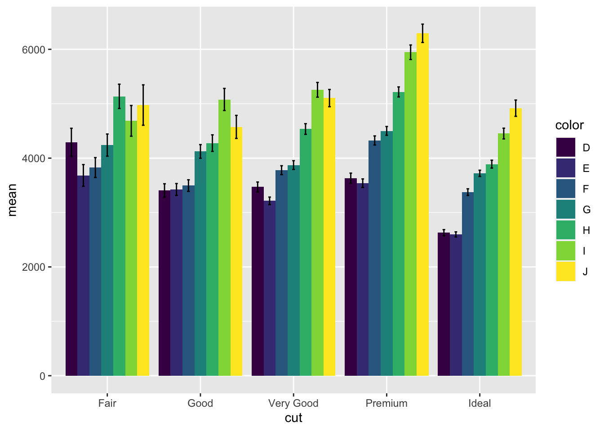
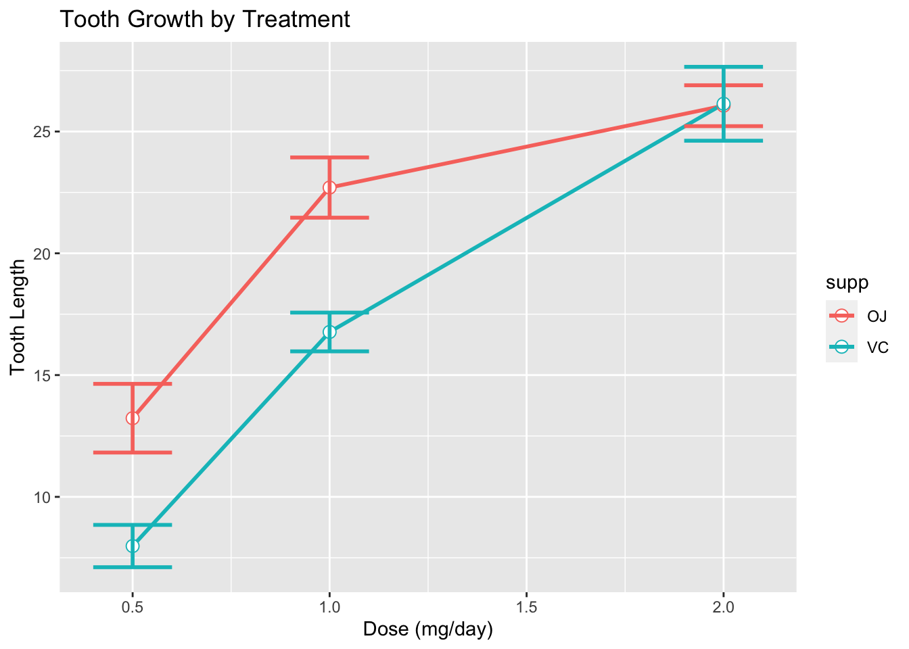

Chapter 2 grouped vertical bar with standard error
data(diamonds)
means <- diamonds %>%
group_by(cut, color) %>%
summarise(mean = mean(price), se = sd(price)/sqrt(n()))## `summarise()` has grouped output by 'cut'. You can override using the `.groups`
## argument.means## # A tibble: 35 × 4
## # Groups: cut [5]
## cut color mean se
## <ord> <ord> <dbl> <dbl>
## 1 Fair D 4291. 257.
## 2 Fair E 3682. 199.
## 3 Fair F 3827. 182.
## 4 Fair G 4239. 204.
## 5 Fair H 5136. 223.
## 6 Fair I 4685. 282.
## 7 Fair J 4976. 371.
## 8 Good D 3405. 123.
## 9 Good E 3424. 109.
## 10 Good F 3496. 106.
## # … with 25 more rowsggplot(means, aes(x = cut, y = mean, fill = color)) +
geom_bar(stat = "identity", position = "dodge") +
geom_errorbar(aes(ymin = mean - se, ymax = mean + se),
position = position_dodge(width = 0.9),
width = 0.2)
2.0.0.0.0.0.0.0.0.0.0.0.0.0.0.0.0.0.0.0.0.0.0.0.0.0.0.0.0.0.0.0.0.0.0.0.0.0.0.0.0.0.0.0.0.0.0.0.0.0.0.0.0.0.0.0.0.0.0.0.0.0.0.0.0.0.0.0.0.0.0.0.0.0.0.0.0.0.0.1
data(ToothGrowth)
means <- ToothGrowth %>% group_by(dose, supp) %>%
summarise(mean = mean(len), se = sd(len)/sqrt(n()))## `summarise()` has grouped output by 'dose'. You can override using the
## `.groups` argument.means## # A tibble: 6 × 4
## # Groups: dose [3]
## dose supp mean se
## <dbl> <fct> <dbl> <dbl>
## 1 0.5 OJ 13.2 1.41
## 2 0.5 VC 7.98 0.869
## 3 1 OJ 22.7 1.24
## 4 1 VC 16.8 0.795
## 5 2 OJ 26.1 0.840
## 6 2 VC 26.1 1.52#Line and Point Graph with Standard Error by Treatment
ggplot(means, aes(x = dose, y = mean, color = supp, group = supp)) +
geom_line(size = 1) +
geom_point(size = 3, shape = 21, fill = "white") +
geom_errorbar(aes(ymin = mean - se, ymax = mean + se),
width = 0.2, size = 1) +
labs(title = "Tooth Growth by Treatment", x = "Dose (mg/day)", y = "Tooth Length")
#dplyr to combine pseudoreplicates and then obtain n, mean and sem
# Example data
set.seed(123)
data <- data.frame(
replicate = rep(1:3, each = 3),
value = rnorm(9, mean = 10, sd = 2),
pseudo = rep(1:3, 3)
)# Combine pseudoreplicates
combined_data <- data %>%
group_by(replicate) %>%
summarise(n = n(),
mean = mean(value),
sd = sd(value),
sem = sd/sqrt(n)) %>%
ungroup()
# View combined data
combined_data## # A tibble: 3 × 5
## replicate n mean sd sem
## <int> <int> <dbl> <dbl> <dbl>
## 1 1 3 10.5 2.28 1.32
## 2 2 3 11.3 1.87 1.08
## 3 3 3 9.01 1.76 1.01